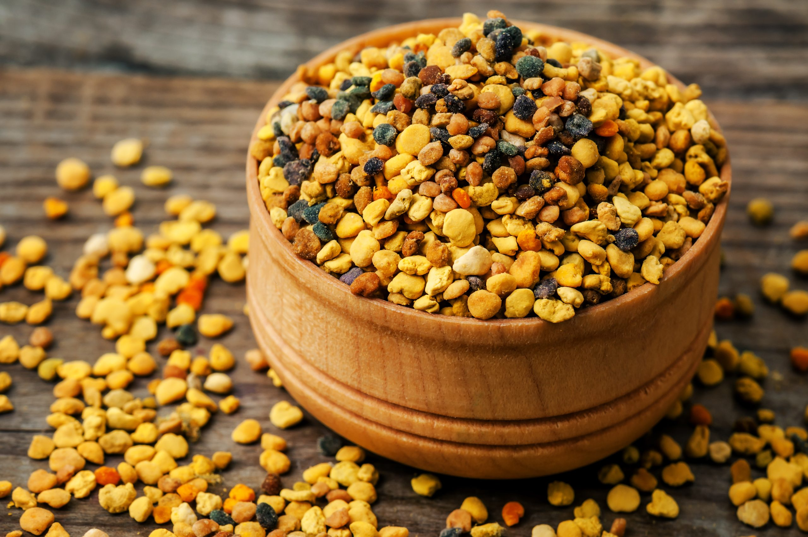
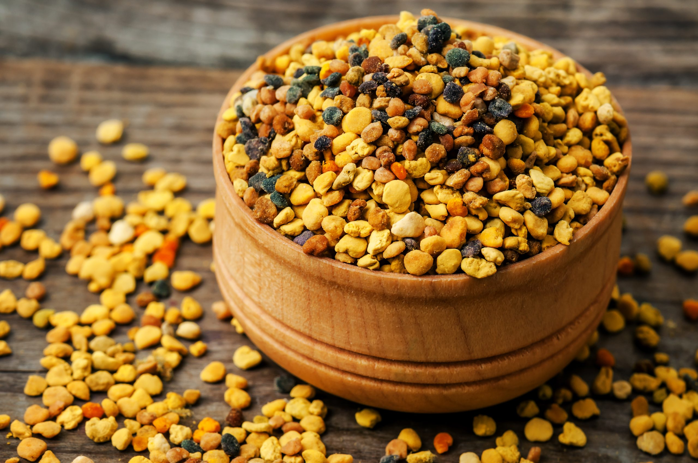

Miel
10€/kg
La miel es probablemente el producto más conocido de las abejas. Se elabora cuando las abejas transforman el néctar de las flores en un alimento viscoso y dulce, mediante procesos de digestión enzimática y almacenamiento en los panales. Rica en azúcares naturales (glucosa y fructosa), antioxidantes y pequeñas cantidades de vitaminas y minerales, es una fuente de energía rápida y un remedio natural para problemas como el dolor de garganta, tos y heridas menores debido a sus propiedades antimicrobianas y calmantes. Además, es un endulzante natural versátil en la cocina.
Jalea Real
30€/6 dosis
La jalea real es una sustancia viscosa y blanquecina producida por las abejas obreras para alimentar a las larvas y a la abeja reina. Rica en proteínas, vitaminas del grupo B (como la B5 y B6), minerales y ácidos grasos esenciales, es conocida como un superalimento. Su principal particularidad es su capacidad para potenciar la vitalidad, fortalecer el sistema inmune y mejorar el estado de ánimo. La abeja reina, que se alimenta exclusivamente de jalea real, puede vivir hasta cinco años, en contraste con las obreras que viven solo unas semanas, lo que subraya el impacto nutritivo de esta sustancia.
Polen
7€/kg
El polen es recolectado por las abejas de las flores y mezclado con enzimas y néctar para formar pequeñas bolitas que transportan a la colmena. Es considerado un alimento completo, ya que contiene proteínas, aminoácidos esenciales, vitaminas, minerales y antioxidantes. Sus beneficios incluyen la mejora de la energía, el fortalecimiento del sistema inmunológico y el apoyo a la digestión. Además, el polen tiene propiedades antiinflamatorias y es utilizado en tratamientos naturales para alergias estacionales, siempre bajo supervisión.
Pack de Productos
39,99€
Pack de Productos Este exclusivo pack combina lo mejor de la colmena: miel pura, jalea real y polen de abeja, cuidadosamente seleccionados para brindarte los beneficios más naturales y nutritivos que las abejas tienen para ofrecer. Miel: Extraída directamente de panales de alta calidad, esta miel es rica en antioxidantes, vitaminas y minerales, ideal para endulzar tus días de manera natural mientras fortaleces tu sistema inmunológico. Jalea Real: Un superalimento único que contiene proteínas, vitaminas B, y nutrientes esenciales que promueven la energía, vitalidad y el bienestar general. Perfecto para mejorar tu estado de ánimo y apoyar tu salud diaria. Polen de Abeja: Conocido como un alimento completo, el polen es una fuente poderosa de proteínas, aminoácidos esenciales y antioxidantes, ideal para fortalecer el sistema inmunológico, mejorar la digestión y combatir el cansancio. Este pack es ideal para quienes buscan una dieta saludable, equilibrada y rica en nutrientes naturales. Aprovecha los beneficios de estos tres productos excepcionales en un solo paquete, perfecto para toda la familia.